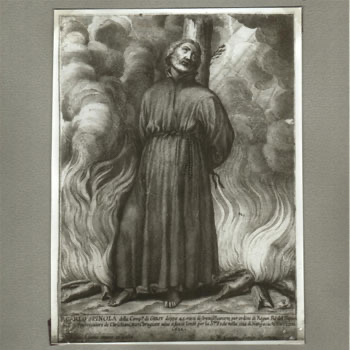

Isusovački blaženici
Svećenik · Misionar · Mučenik
Bl. Karlo Spinola
1564. – 1622.
Misionarsku je želju ostvario nakon dugih i opasnih putovanja. U japanskom zatočeništvu slavio je misu i odgajao novake prije zajedničkoga mučeništva.
Tekst je preveden i prilagođen uz pomoć umjetne inteligencije.

Izvor slike
- Spomendan
- 10. rujna
- Zaštitništvo
- Nije navedeno u izvoru
- Životni vijek
- 1564. – 1622.
- Djelovanje
- Misije i evangelizacija · Obrazovanje i poučavanje vjere · Pisanje, znanost i umjetnost · Duhovno vodstvo i razlučivanje · Progoni i progonstvo · Mučeništvo
- Razdoblje
- 16., 17. stoljeće
- Ulazak u Družbu Isusovu
- 1584.
- Dolazak u Japan
- 1602.
- Datum smrti
- 10. rujna 1622.
- Mjesto smrti
- Nagasaki, Japan
U kalendaru zbirke koristi se dan smrti. Taj datum nije zasebna potvrda liturgijskoga spomendana.
Životopis
Karlo Spinola (1564.–1622.) prepoznao je misionarski poziv pod dojmom mučeništva Rodolfa Acquavive. Njegovu odluku za Družbu Isusovu podupire sačuvano pismo iz prosinca 1584. stricu Filipu, kardinalu i nadbiskupu Nole. Novicijat je započeo u Noli, nastavio školovanje u Lecceu i Napulju te upoznao Alojzija Gonzagu. U Rimu je učio matematiku kod Christopha Claviusa, a u milanskoj Breri dovršavao filozofiju, prirodne znanosti i teologiju. Zaređen je 1594.
Nakon pučkih misija u Italiji dobio je željeno odredište: Japan. Do njega je putovao šest godina na osam brodova. Brodolom, pokvareno kormilo, povratak preko Brazila i zarobljavanje kod engleskih gusara više su puta prekinuli put. U Macau se uključio u projekt nove crkve nakon požara, a 1601. preuzeo financijsku službu za japansku misiju. U Japan je napokon stigao u srpnju 1602.
U Arimi je učio jezik; u Miyaku, današnjem Kyotu, naviještao je vjeru i poučavao matematiku i astronomiju. Znanstveno znanje omogućavalo mu je razgovor s obrazovanim japanskim slojevima. Tražio je europske knjige i instrumente, zanimajući se i za arhitekturu. Godine 1612. sudjelovao je s Giuliom Alenijem u usporednom promatranju pomrčine iz Nagasakija i Macaua radi geografskih izračuna.
Nakon zabrane kršćanstva 1614. ostao je u Japanu i izlazio noću. U prosincu 1618. zarobljen je s Ambrósijem Fernandesom i Ioannesom Kingocuom. Za zatočenja je nacrtao plan zatvora i poslao ga u Rim. Četiri godine izloženoga zatvora pretvorio je u mjesto svakodnevne mise i novicijata sedmorice katehista. Prije pogubljenja primio je njihove zavjete. Na Brdu mučenika u Nagasakiju 10. rujna 1622. umro je spaljen, predvodeći molitvu. Pio IX. proglasio ga je blaženim 1867.
Tekst je preveden i prilagođen uz pomoć umjetne inteligencije.
Pročitaj više na izvornoj stranici ↗